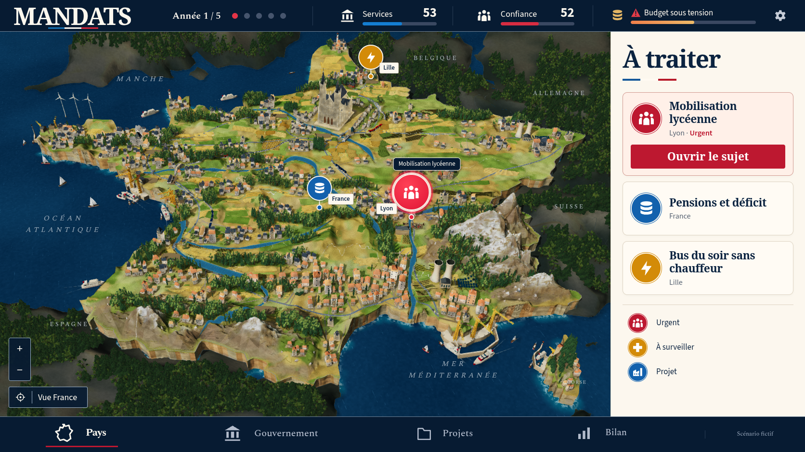
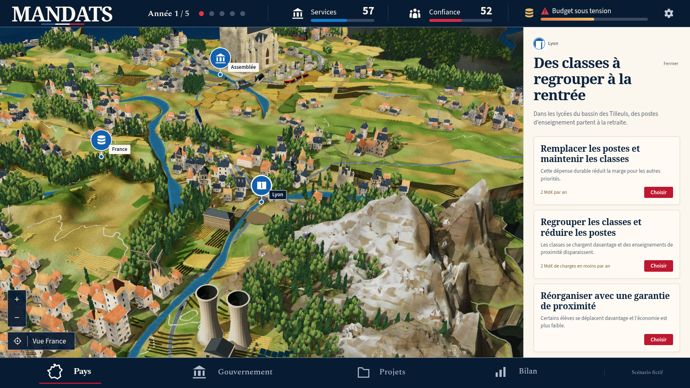
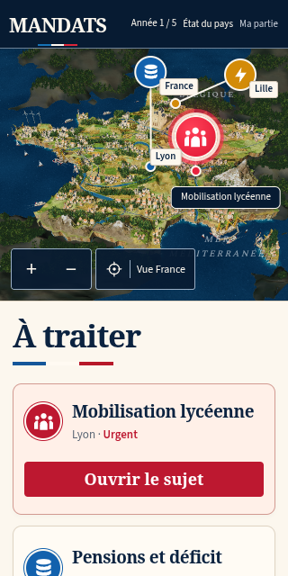
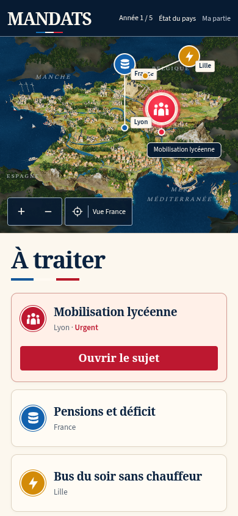

MANDATS — comparaison 40
Fidélité visuelle encore insuffisante. La reconstruction continue. Le passage des contrôles techniques ne constitue pas une validation artistique.
La référence montre un scénario fictif. La capture du jeu conserve ses véritables valeurs : année 1, services 53, confiance 52, après une décision de regroupement des classes. Les sujets de Nantes et de Lille sont ceux de cette partie ; aucune donnée n’a été injectée pour copier le scénario de l’image.


Référence canonique.Production 40 : véritable mobilisation lycéenne à Lyon.
| Partie | Corrections vérifiées | Travail restant |
|---|
| Relief et côtes | Pentes parentes limitées, neige continue, roches côtières éclaircies et sculptées. | Les grandes facettes alpines et les strates côtières restent trop grossières. L’audit des vrais triangles mesure encore des gradients supérieurs à la limite des contrôles parents. |
| Bâtiments et bois | 783 maisons rendues ; huit à Dunkerque et dix-neuf dans les quatre bourgs corses. Volumes des maisons et horloges réduits ; ramures distantes du pin et du cyprès plus détaillées. | Variété, finesse et aspect naturel encore éloignés de la référence. |
| Industrie et transports | Ouvertures réelles des tours de refroidissement, panneaux plus sombres, véhicules au sol et inclinés selon la pente. Les deux voies de Seine partagent un viaduc de 0,0852 unité de largeur. Trois ouvrages au total. | Reprendre la finition et la composition des équipements pour retrouver le caractère de miniature de la référence. |
| Repères | Halo rouge, titre navy du véritable sujet urgent. Les anneaux restent sur la projection des villes. Le titre est séparé de leur placement. | Le libellé de Lyon passe encore à gauche trop tôt sur ordinateur ; la carte d’agenda coupe le titre sur deux lignes. |

Inspection obtenue avec « Voir le lieu », puis un clic sur « Réduire la carte » : le relief nécessite encore du travail.

Source à 320 × 640, Chromium DPR 1.
Source à 390 × 844, Chromium DPR 1. Ces deux images sont des captures de source, distinctes des preuves de production et des tests WebKit.Contrôles de cette version
1 082 tests existants réussis, trois cibles TypeScript et build complet. Le premier export distant échoue faute du proxy réseau de l’environnement ; le build suivant, avec ce proxy, réussit. Les deux tests DPR originaux sur ordinateur et WebKit passent, avec leur attente Babylon de 15 secondes inchangée. Les suites complètes rework, social, header, mandats, board et story doivent encore être exécutées sur la version finalement retenue.
Les captures de production n’ont aucune erreur de page ni requête échouée. L’inspection séparée trouve douze monuments, aucune intersection entre ces monuments et les canopées testées, et aucune intersection entre les polygones de quais et de bateaux des cinq ports. Ce périmètre précis ne prouve pas l’absence de toute intersection dans la scène.
Le terrain et les arbres ont été reproduits octet par octet. Le navigateur emploie SwiftShader ; aucune mesure de fréquence sur GPU physique n’est revendiquée.
Manifeste et empreintes · Résultat des deux tests originaux · Inspection en lecture seule · Gradients des vrais triangles alpins · Comparaison précédente